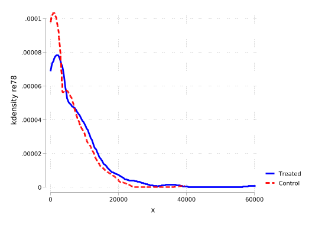
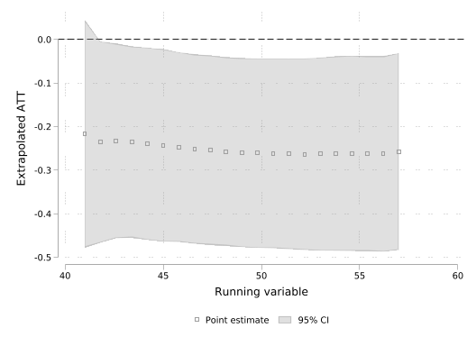

Code Call-out 8.1: Quantile Effects with an Exogenous Treatment
In this code call-out we will work with results and data discussed in Firpo (2007), which require us to return once again to the LaLonde (1986) data we have discussed at length in Chapter 3. However, here rather than focussing on average treatment effects on the treated, we will focus on a range of quantile treatment effects (QTEs) and quantile treatment effects on the treated (QTTs).
Estimating QTEs with Experimental Interventions
We will begin by exploring QTEs when treatment assignment is random, and does not require the incorporation of any controls. In these cases, at least for the estimates themselves, it is sufficient to simply directly calculate quantiles of the outcome among the treated and control units to arrive to QTEs. Let’s first load these data, and ensure that we know which our outcome and treatment variables are:
clearallsetmoreoff* Load datasetuse"data/Dehejia_Wahba_2002.dta", clear* data structuredescribesummarize re78 treattabulate treatsummarize re78 if treat == 1summarize re78 if treat == 0summarize re78 if treat == 0 & data_id == "Dehejia-Wahba Sample"keepif data_id == "Dehejia-Wahba Sample"* Kernel density plot to visualize distributiontwowaykdensity re78 if treat == 1, lcolor(blue) lwidth(thick) /// || kdensity re78 if treat == 0, lcolor(red) lwidth(thick) ///legend(label(1 "Treated") label(2 "Control")) ///
Examining densities of treatment and control
Contains data from data/Dehejia_Wahba_2002.dta
Observations: 16,437
Variables: 11 21 May 2024 20:52
-------------------------------------------------------------------------------
Variable Storage Display Value
name type format label Variable label
-------------------------------------------------------------------------------
data_id str20 %20s
treat float %9.0g
age float %9.0g
education float %9.0g
black float %9.0g
hispanic float %9.0g
married float %9.0g
nodegree float %9.0g
re74 float %9.0g
re75 float %9.0g
re78 float %9.0g
-------------------------------------------------------------------------------
Sorted by:
Variable | Obs Mean Std. dev. Min Max
-------------+---------------------------------------------------------
re78 | 16,437 14588.22 9702.608 0 60307.93
treat | 16,437 .0112551 .1054945 0 1
treat | Freq. Percent Cum.
------------+-----------------------------------
0 | 16,252 98.87 98.87
1 | 185 1.13 100.00
------------+-----------------------------------
Total | 16,437 100.00
Variable | Obs Mean Std. dev. Min Max
-------------+---------------------------------------------------------
re78 | 185 6349.144 7867.402 0 60307.93
Variable | Obs Mean Std. dev. Min Max
-------------+---------------------------------------------------------
re78 | 16,252 14682.01 9681.421 0 39483.53
Variable | Obs Mean Std. dev. Min Max
-------------+---------------------------------------------------------
re78 | 260 4554.801 5483.836 0 39483.53
(15,992 observations deleted)

Above we have kep the data corresponding to the “Dehejia-Wahba Sample” which is the original 445 treatment and control observations in the experimental implementation discussed in Dehejia and Wahba (1999). With these experimental data, let’s calculate some QTE. In particular, let’s calculate the quantity \(\tau_{QTE(0.8)}\), which is the effect at quantile 80. We can do this simply by calculating the quantiles in each group:
* Compute the 80th percentile for the treated group_pctile re78 if treat == 1, p(80)scalar q80_treated = r(r1)* Compute the 80th percentile for the control group_pctile re78 if treat == 0, p(80)scalar q80_control = r(r1)* Compute the Quantile Treatment Effect at the 80th percentiledisplay"QTE(0.8) = " q80_treated - q80_control
QTE(0.8) = 2265.4307
Of course, we are not limited to doing this at the 80th quantile. We can examine QTEs at multiple points of the distribution, below examining quantiles 25, 50 and 75 (and comparing these to ATEs themselves):
_pctile re78 if treat==1, p(25, 50, 75)local FY1_25 = r(r1)local FY1_50 = r(r2)local FY1_75 = r(r3)_pctile re78 if treat==0, p(25, 50, 75)local FY0_25 = r(r1)local FY0_50 = r(r2)local FY0_75 = r(r3)foreachqof numlist 25 50 75 {display"QTE at quantile `q' = "`FY1_`q''-`FY0_`q''}* Mean calculationsummarize re78 if treat == 1scalar mean_treated = r(mean)summarize re78 if treat == 0scalar mean_control = r(mean)
QTE at quantile 25 = 485.2298
QTE at quantile 50 = 1093.5135
QTE at quantile 75 = 2350.553
Variable | Obs Mean Std. dev. Min Max
-------------+---------------------------------------------------------
re78 | 185 6349.144 7867.402 0 60307.93
Variable | Obs Mean Std. dev. Min Max
-------------+---------------------------------------------------------
re78 | 260 4554.801 5483.836 0 39483.53
If we inspect these QTEs and compare them to the values reported in the Supplementary Table II of Firpo (2007), we can see that they are very similar, with some marginal differences at certain quantiles likely owing to differences in manners of estimating quantiles (there are a number of ways to estimate quantiles, including different way with dealing with ties, interpolations, and so forth). We can go also further, and inspect effects across the entire distribution, which we do below at each centile:
gen FY1 = .gen FY0 = .genquantile = .// Generate empirical CDFs for each groupforvaluesq=1/99 {quicentile re78 if treat == 1, centile(`q')quireplace FY1 = r(c_1) in`q'quicentile re78 if treat == 0, centile(`q')quireplace FY0 = r(c_1) in`q'quireplacequantile = `q'in`q'}gendiff = FY1-FY0// Plot both distributionstwowaylinequantile FY1, lcolor(blue) lpattern(solid) lwidth(thick) /// || linequantile FY0, lcolor(red) lpattern(dash) lwidth(thick) ///legend(label(1 "Treated") label(2 "Control"))
Typically, inference on quantile treatment effects will proceed using a bootstrap. However, we can also estimate these quantile treatment effects (along with standard errors) using quantile regression in this case with unconditional unconfoundedness. It is important to note, however, that we may see minor differences between quantile regression and quantile treatment effects as calculated “by hand” above depending on the way that percentiles are calculated. We can see this below where we estimate a simple quantile regression at the 80th percentile:
qreg re78 treat, quantile(0.8)
Iteration 1: WLS sum of weighted deviations = 1013093.5
Iteration 1: Sum of abs. weighted deviations = 1012333
note: alternate solutions exist.
Iteration 2: Sum of abs. weighted deviations = 949189.72
Iteration 3: Sum of abs. weighted deviations = 891414.9
.8 Quantile regression Number of obs = 445
Raw sum of deviations 899524.2 (about 9737.1543)
Min sum of deviations 891414.9 Pseudo R2 = 0.0090
------------------------------------------------------------------------------
re78 | Coefficient Std. err. t P>|t| [95% conf. interval]
-------------+----------------------------------------------------------------
treat | 2335.045 1024.958 2.28 0.023 320.6601 4349.43
_cons | 8469.275 660.864 12.82 0.000 7170.457 9768.093
------------------------------------------------------------------------------
Here, while similar, this value of 2336 is different to the unconditional QTE of 2258 reported above. However, if we dig and explore this particular case, we can see that this simply owes to the fact that in our control group, there is an even number of units, and the 80th percentile happens to fall between two units, and in these cases Stata’s _pctile command will interpolate, while regression will not. We can confirm to ourselves that there is indeed equivalence between these two settings provided that quantiles are smooth if we simply remove one observation so that percentiles in each group now fall precisely on a specific unit for the values below:
sort treat re78//drop one unit (with re78=0)dropin 1foreachpof numlist 25 50 75 {//First, calculate quantile regression:qreg re78 treat, quantile(`p')// Now calculate percentiles _pctile re78 if treat == 1, p(`p')local F1 = r(r1) _pctile re78 if treat == 0, p(`p')local F0 = r(r1) dis "treat: `F1', control: `F0'" dis "effect: "`F1'-`F0'}
(1 observation deleted)
Iteration 1: WLS sum of weighted deviations = 910097.87
Iteration 1: Sum of abs. weighted deviations = 920581.78
Iteration 2: Sum of abs. weighted deviations = 751630.18
Iteration 3: Sum of abs. weighted deviations = 589298.86
.25 Quantile regression Number of obs = 444
Raw sum of deviations 589710 (about 0)
Min sum of deviations 589298.9 Pseudo R2 = 0.0007
------------------------------------------------------------------------------
re78 | Coefficient Std. err. t P>|t| [95% conf. interval]
-------------+----------------------------------------------------------------
treat | 485.2298 133.764 3.63 0.000 222.3373 748.1223
_cons | 0 86.34429 0.00 1.000 -169.6964 169.6964
------------------------------------------------------------------------------
treat: 485.2297973632813, control: 0
effect: 485.2298
Iteration 1: WLS sum of weighted deviations = 1048390.8
Iteration 1: Sum of abs. weighted deviations = 1047006
Iteration 2: Sum of abs. weighted deviations = 1036679.8
Iteration 3: Sum of abs. weighted deviations = 1021809.1
Median regression Number of obs = 444
Raw sum of deviations 1025648 (about 3701.812)
Min sum of deviations 1021809 Pseudo R2 = 0.0037
------------------------------------------------------------------------------
re78 | Coefficient Std. err. t P>|t| [95% conf. interval]
-------------+----------------------------------------------------------------
treat | 1038.299 907.3394 1.14 0.253 -744.9364 2821.535
_cons | 3194.01 585.6851 5.45 0.000 2042.936 4345.084
------------------------------------------------------------------------------
treat: 4232.30908203125, control: 3194.010009765625
effect: 1038.2991
Iteration 1: WLS sum of weighted deviations = 1032639.5
Iteration 1: Sum of abs. weighted deviations = 1031822.3
Iteration 2: Sum of abs. weighted deviations = 997580.54
Iteration 3: Sum of abs. weighted deviations = 966038.39
.75 Quantile regression Number of obs = 444
Raw sum of deviations 979874.4 (about 8124.7148)
Min sum of deviations 966038.4 Pseudo R2 = 0.0141
------------------------------------------------------------------------------
re78 | Coefficient Std. err. t P>|t| [95% conf. interval]
-------------+----------------------------------------------------------------
treat | 2342.501 1108.253 2.11 0.035 164.4016 4520.6
_cons | 7300.498 715.374 10.21 0.000 5894.541 8706.455
------------------------------------------------------------------------------
treat: 9642.9990234375, control: 7300.498046875
effect: 2342.501
In this case, we see that both the QTEs, as well as the means among treated and control units are equivalent to the quantile-regression based calculation.
Estimating QTEs and QTTs with non-Experimental Interventions
If rather than believing that unconditional unconfoundedness hold, we instead believe that conditional unconfoundedness is the appropriate assumption, there are two potential ways forward. To look at this, we will use the same LaLonde (1986) data, but now with the experimental treatment sample, and the non-experimental subsample as potential control units. We will control for the same factors we have discussed in code call-outs in Chapter 3. Let’s begin by loading the requisite data, which is the observational (CPS) subsample, along with treated units, and generating a number of required covariates:
Let’s start by examining how we estimate QTEs in this observational setting. A first, simpler, case exists if we are happy to report conditional QTEs. We discuss the potential drawbacks of such QTEs in the book, but for now we can just note that if we are happy to report such conditional QTEs and invoke the requried assumptions discussed in Section x.x.x, we can do this very simply, by just estimating a quantile regression with covariates. We do this below (with an identical group of covariates to those used in code call out 3.1), reporting conditional quantile effects at the 25th, 50th, 75th, and 80th quantiles:
The above covariate structure is slightly different to that described in the Supplementary Materials of Firpo (2007), but is useful in providing an identical comparison to previous covariate specifications. We can also examine this over the entire distribution of (conditional) quantiles. Below we loop through quantiles 20-95 (ie quantiles where we observed non-zero salaries in the experimental case). We do this as a simple loop, in each iteration saving the estimated quantile treatment effect.
* Create a new frame frame create qte_condframe change qte_condsetobs 76 // Set number of observations to match quantilesgenquantile = (_n+19)/100gen qte = .gen qte_se = .* Estimate QTEs across quantiles frame change defaultlocal i = 1forvaluesq=20/95 {quiqreg re78 treat `xvars', quantile(0.`q') frame change qte_condquireplace qte = _b[treat] in`i'quireplace qte_se = _se[treat] in`i' frame change defaultlocal ++i}
Number of observations (_N) was 0, now 76.
(76 missing values generated)
(76 missing values generated)
Finally, we can plot the resulting distribution of quantile treatment effects. We do this below, and note that we see a reasonable correspondence with the experimentally estimated QTEs laid out previously, however with some important differences particularly at the upper end of the distribution.
This can also be estimated using the user-written ivqte package of Frölich and Melly (2010), which similarly permits for heteroscedastic standard errors, and various other useful extensions. We will not examine this in great depth here, but can easily see the equivalence below, where we note the comparison of the point estimate at three specific points to those estimated in the original call to quantile regression above.
//NOTE: Requires a number of user-written programmes//net install ivqte, from("https://raw.githubusercontent.com/bmelly/Stata/main/")//ssc install moremata//ssc install kdensivqte re78 `xvars' (treat), quantiles(0.25) varianceivqte re78 `xvars' (treat), quantiles(0.50) varianceivqte re78 `xvars' (treat), quantiles(0.75) variance
While the previously implemented methods allow for the calculation of conditional quantile effects, we can use these tools, and in particular the ivqte package, to calculate unconditional QTEs. Below, we implement Firpo (2007)’s methods which implements these weighting-based estimators, along with their standard errors.
We will do this with the same covariate set, noting that this simply requires for the same ivqte command to be invoked as above, but now covariates should be passed as arguments in continuos and dummy, and ivqte will infer that Firpo (2007)’s reweighting method should be used.
12032 observations have been trimmed. 4145 observations are left after trimming
> .
Unconditional Quantile Treatment Effects under exogeneity
Estimator suggested in Firpo (2007)
Quantile(s): .25 .5 .75 .8
Dependent variable: re78
Treatment variable: treat
Control variable(s): age age2 age3 education educ2 re74 re75 edure74 bl
> ack hispanic married u74 u75
Number of observations: 16177
Propensity score estimated by local logit regression with h = infinity and lamb
> da = 1
Variance estimated using local logit regression with h = infinity and lambda =
> 1
------------------------------------------------------------------------------
re78 | Coefficient Std. err. z P>|z| [95% conf. interval]
-------------+----------------------------------------------------------------
Quantile_1 | 4004.615 862.1704 4.64 0.000 2314.792 5694.438
Quantile_2 | -1367.273 1117.262 -1.22 0.221 -3557.066 822.5198
Quantile_3 | -3633.77 2811.192 -1.29 0.196 -9143.605 1876.066
Quantile_4 | -2863.53 1358.438 -2.11 0.035 -5526.019 -201.0415
------------------------------------------------------------------------------
In this case, we see that the estimator performs quite poorly, suggesting that the conditional unconfoundedness assumption is likely unreasonable when considering all observations. In practice, this procedure trims very high and very low propensity scores, and we can see that if we do not trim such propensity scores, we observe estimates which are even further from their experimental counterparts:
Unconditional Quantile Treatment Effects under exogeneity
Estimator suggested in Firpo (2007)
Quantile(s): .25 .5 .75 .8
Dependent variable: re78
Treatment variable: treat
Control variable(s): age age2 age3 education educ2 re74 re75 edure74 bl
> ack hispanic married u74 u75
Number of observations: 16177
Propensity score estimated by local logit regression with h = infinity and lamb
> da = 1
Variance estimated using local logit regression with h = infinity and lambda =
> 1
------------------------------------------------------------------------------
re78 | Coefficient Std. err. z P>|z| [95% conf. interval]
-------------+----------------------------------------------------------------
Quantile_1 | -764.0093 22257.19 -0.03 0.973 -44387.29 42859.27
Quantile_2 | -10765.62 24978.67 -0.43 0.666 -59722.91 38191.67
Quantile_3 | -15471.84 61339.12 -0.25 0.801 -135694.3 104750.6
Quantile_4 | -15634.62 73404.76 -0.21 0.831 -159505.3 128236.1
------------------------------------------------------------------------------
However, when using more judicious trimming, we observe estimates which are at least broadly positive, though still quite different to those documented in the experimental sample.
15606 observations have been trimmed. 571 observations are left after trimming.
Unconditional Quantile Treatment Effects under exogeneity
Estimator suggested in Firpo (2007)
Quantile(s): .25 .5 .75 .8
Dependent variable: re78
Treatment variable: treat
Control variable(s): age age2 age3 education educ2 re74 re75 edure74 bl
> ack hispanic married u74 u75
Number of observations: 16177
Propensity score estimated by local logit regression with h = infinity and lamb
> da = 1
Variance estimated using local logit regression with h = infinity and lambda =
> 1
------------------------------------------------------------------------------
re78 | Coefficient Std. err. z P>|z| [95% conf. interval]
-------------+----------------------------------------------------------------
Quantile_1 | 647.2046 681.2541 0.95 0.342 -688.0288 1982.438
Quantile_2 | 1862.038 1265.753 1.47 0.141 -618.7914 4342.868
Quantile_3 | 727.5698 1622.613 0.45 0.654 -2452.694 3907.834
Quantile_4 | -151.749 1892.948 -0.08 0.936 -3861.859 3558.361
------------------------------------------------------------------------------
Firpo (2007) documents results which are more broadly similar to those in the experimental sub-sample when using a much richer specification for the propensity score. In general, this points to the importance of appropriately modelling the propensity score, and the nature of the conditional confoundedness assumption, as discussed in general with methods based on conditional unconfoundedness in Chapter 3 of the book.
Code Call-out 8.2: Extrapolating Regression Discontinuity Parameters Away from the Cut-off
Londoño-Vélez, Rodríguez, and Fabio Sánchez (2020) study the impact of receiving financial aid for post-secondary education on rates of enrollment among low-income individuals in Colombia. Specifically, they take advantage of program eligibility rules based on cut-off scores in a wealth index to isolate effects of financial aid eligibility. These cut-off scores in the wealth index imply that for individuals whose family wealth index is below a specific explicitly designed score, they are eligible to receive financial aid provided that they meet test score requirements. However, comparable individuals with scores in the wealth index even marginally above this cut-off, are not eligible to receive financial aid.
While this suggests a standard regression discontinuity design, one novelty of these wealth cut-off scores is that they are not fixed nation-wide, but rather vary by location. For individuals living in rural areas, individuals with a score below 40.75 are eligible for financial aid, while in large metropolitan areas, this score is 57.21 (refer to Londoño-Vélez, Rodríguez, and Fabio Sánchez (2020), page 201 for full details). This suggests that we can extrapolate findings away from specific cut-offs to consider the generalisability of any treatment effect local to specific cut-off scores, following Cattaneo et al. (2021).
Confirming Discontinuities in Treatment Eligility
To see the broad context of the study, we will begin by confirming that there is a discontinuity in financial aid eligibility rates around the test score cut-off. We begin by opening the data from Londoño-Vélez, Rodríguez, and Fabio Sánchez (2020) and working with the sample they use in the paper. Specifically here, we will also impose the restriction eligible_saber11==1 which implies that all individuals in the sample meet educational criteria for financial aid, and so the only discontinuity which exists is that owing to the wealth eligibility criteria:
Now let’s visualise the discontinuity in eligibility in the entire sample. Here we will work with a re-centred running variable which for each individual defines their distance to the area-specific eligigility threshold which applied to them. In order to set up a simple visualisation we will use an arbitrary definition setting bins from 50 points below the threshold up to 50 points above the threshold, in increments of 2 points. For a discussion of optimal bins in this setting refer to the discussion in Chapter 6 of the book. Within each bin, we will generate average scores as bin, and will plot a single point for each average score. We will then overlay a linear fit on either side of the cut-off using the original data.
Above we see clear evidence of a sharp increase in eligibility when individuals fall just below the cut-off point. While no one with an above cut-off score is found to be eligible, this immediately jumps to around 60% eligibility among those with a below cut-off score. In what remains of the code call out below we will focus on the impact of falling below this cut-off, rather than the eligibility criteria itself. In effect, we wil consider a sharp design rather than a fuzzy design, though note that discussion in Cattaneo et al. (2021) points to how we could generalise this for a fuzzy design.
Visualising Multiple Treatment Cut-offs
Before we consider the process of extrapolating across cut-offs, let’s begin by confirming that we do indeed see multiple cut-offs owing to the differential treatment thresholds. We do this below, using the sisben_area variable, which takes 1 for large metropolitan areas which have a cut-off of 57.21 points, and 3 for rural areas with a cut-off of 40.75 points. There is actually also a third group (other urban areas) which takes a value of 2 and has a cut-off of 56.32 points, but because this is very close to group 1, we will only focus on rural and metropolitan areas.
We will generate two graphs, simply seeking to confirm that we see a sharp cut-off for each group at the point where, theoretically, such a cut-off should appear. We will do this with the precise score on the wealth index (sisben_score).
These graphs above are really only used to show descriptive patters, as we have built bins in average of 2 points, and so the final bin on the right hand side will be slightly contaminated with above-threshold points, but we can correct this by generating different cut-points easily enough, and the graphs above make clear that there are clear discontinuities at the points which correspond to the specific wealth cut-off corresponding to each group.
Let’s now consider some outcome of interest, and the extrapolation of treatment effects which we seek to achieve. In particular, let’s work with the variable spadies_any which indicates whether an individual studies any type of post-secondary education. And let’s visualise the mean outcome and a local polynomial fit of the outcomes for each group. Below we do this in a single graph. To do so we generate two variables which we can use to generate means, which we arbitrarily set in terms of 2 point bins. We then use egen ... mean() to generate mean scores in each of these groups simultaneously, before plotting these means as well as local polynomial fits on each side. Note that we generate group means without collapsing so that we can generate local polynomial fits based on the original microdata, rather than collapsed means.
gen round1=floor(running_sisben/2) if sisben_area ==1gen round3=floor(running_sisben/2) if sisben_area ==3bys round1 round3 sisben_area: gen n=_nbysort round1 round3 sisben_area: egen bin_group = mean(spadies_any)twowayscatter bin_group sisben_score if n==1&sisben_area ==1, ms(Oh) msize(medlarge) /// || scatter bin_group sisben_score if n==1&sisben_area ==3, ms(Sh) mcolor(red) msize(medlarge) /// || lpoly spadies_any sisben_score if sisben_area ==3&running_sisben<0, bwidth(10) lpattern(dash) lcolor(red) /// || lpoly spadies_any sisben_score if sisben_area ==3&running_sisben>=0, bwidth(10) lpattern(dash) lcolor(red) /// || lpoly spadies_any sisben_score if sisben_area ==1&running_sisben<0, bwidth(10) lpattern(longdash) lcolor(navy) /// || lpoly spadies_any sisben_score if sisben_area ==1&running_sisben>=0, bwidth(10) lpattern(longdash) lcolor(navy) lwidth(thick) ///legend(order(1 "High cut-off" 2 "Low cut-off" 3 "Fit (low)" 5 "Fit (high)") pos(6) rows(1)) ///xtitle("SISBEN wealth index") ytitle("Studying any tertiary education") ylabel(, format("%03.1f"))
In the above plot we can quite easily see the idea of what we wish to do when extrapolating treatment effects away from the cut-off. Specifically, we wish to consider the first cut-off, here at 40.75 points. We wish to calculate the treatment effect at this cut-off by comparing outcomes among exposed units just at the left to those just at the right in the spirit of an RDD. And then we wish to consider what the treatment effect would look like at specific points above 40.75 if we use the trend among units exposed at a higher cut-off point (those with blue circles) to extrapolate means in the below-cut-off group with red squares, before finally comparing extrapolated means with actual observed rates among those with red squares to the right of the treatment cut-off.
Extrapolating Treatment Effects Away from the Cut-off
In order to do such an extrapolation, we require a way to estimate local polynomial fits at various points (including at end-points just before treatment cut-offs), as well as the variance of these local polynomial estimates. Fortunately, in relation to the work of Cattaneo et al. (2021), the authors developed software for such local polynomial fits, incorporating elements such as robust bias correction. This is avaialable (in Stata and R) as nprobust and we will work with this package below to estimate the required quantities.
Let’s begin by imagining that we wish to extrapolate treatment effects from the true cut-off of 40.75 up a higher point on the SISBEN wealth index (50 points). To do so, we need four quantities. Firstly, we need to calculate the end point of the low-cut-off group precisely at 40.75 points (ie the point just before the discontinuity kicks in). Cattaneo et al. (2021) call this first quantity \(\mu_{0,\ell}(\ell)\) Secondly, we need to calculate the mean values in the high-cut-off group at both 40.75 and 50 points, which allows us to calcualte any trend over this range. Cattaneo et al. (2021) refer to these as \(\mu_{0,h}(\ell)\) and \(\mu_{0,h}(\bar{x})\) respectively. And finally, we wish to calculate the mean among low-cut-off group outcomes at 50 points, which Cattaneo et al. (2021) refer to as \(\mu_{1,\ell}(\bar{x})\). Once we have these points in hand, as discussed in Section 8.4.2.2 of the book, we can simply extrapolate our treatment effect as: \[
\widehat\tau_\ell(\bar{x})=\widehat\mu_{1,\ell}(\bar{x}) -[\widehat\mu_{0,h}(\bar{x})+\widehat\mu_{0,\ell}(\ell)-\widehat\mu_{0,h}(\ell)].
\]
Let’s do this below, using `lprobust’ to generate key quantities. We will also take the variance at each point, allowing us to calculate the standard error of the extrapolated treatment effect as the square root of the total variance. Note that because we are jointly estimating \(\mu_{0,h}(\ell)\) and \(\mu_{0,h}(\bar{x})\) and then wish to calculate the variance of \(\mu_{0,h}(\bar{x})-\mu_{0,h}(\ell)\), this is \(Var(\mu_{0,h}(\bar{x})-\mu_{0,h}(\ell))=Var(\mu_{0,h}(\bar{x})+Var(\mu_{0,h}(\ell))-2\times Cov(\mu_{0,h}(\bar{x}),\mu_{0,h}(\ell))\); see for example the calculation in the authors’ original materials here.
//net install nprobust, from(https://raw.githubusercontent.com/nppackages/nprobust/master/stata) replacegen c0 = 40.75 in 1lprobust spadies_any sisben_score if sisben_area==3&sisben_score < 40.75, eval(c0)local mu_0_l_l = e(Result)[1,5]local v_0_l_l = e(Result)[1,8]^2gen c1 = 50 in 1lprobust spadies_any sisben_score if sisben_area==3&sisben_score >= 40.75, eval(c1)local mu_1_l_x = e(Result)[1,5]local v_1_l_x = e(Result)[1,8]^2generate c2 = 40.75 in 1replace c2 = 50 in 2lprobust spadies_any sisben_score if sisben_area==1&sisben_score < 57.21, eval(c2) covgrid bwselect("mse-dpi")local mu_0_h_l = e(Result)[1,5]local mu_0_h_x = e(Result)[2,5]local v_0_h_l = e(Result)[1,8]^2local v_0_h_x = e(Result)[2,8]^2local cov = e(cov_rb)[2,1]local effect = `mu_1_l_x'-(`mu_0_h_x'+`mu_0_l_l'-`mu_0_h_l')dis "Effect at 50 is: `effect'"localvariance = `v_0_l_l'+`v_1_l_x'+`v_0_h_l'+`v_0_h_x'-2*`cov'dis "Variance at 50 is: `variance'"
(53,631 missing values generated)
Local Polynomial Regression Estimation and Inference.
Sample size (n=) 1434
Polynomial order for point estimation (p=) 1
Order of derivative estimated (v=) 0
Polynomial order for confidence interval (q=) 2
Kernel function Epanechnikov
Bandwidth selection method mse-dpi
------------------------------------------------------------------------
Point Std. Robust B.C.
eval bw Eff.n Est. Error 95% Conf. Interval
------------------------------------------------------------------------
1 40.7500 7.7952 300 0.6808 0.0658 0.4297 0.8341
------------------------------------------------------------------------
(53,631 missing values generated)
Local Polynomial Regression Estimation and Inference.
Sample size (n=) 407
Polynomial order for point estimation (p=) 1
Order of derivative estimated (v=) 0
Polynomial order for confidence interval (q=) 2
Kernel function Epanechnikov
Bandwidth selection method mse-dpi
------------------------------------------------------------------------
Point Std. Robust B.C.
eval bw Eff.n Est. Error 95% Conf. Interval
------------------------------------------------------------------------
1 50.0000 10.4888 345 0.4382 0.0289 0.3524 0.5064
------------------------------------------------------------------------
(53,631 missing values generated)
(1 real change made)
Local Polynomial Regression Estimation and Inference.
Sample size (n=) 7825
Polynomial order for point estimation (p=) 1
Order of derivative estimated (v=) 0
Polynomial order for confidence interval (q=) 2
Kernel function Epanechnikov
Bandwidth selection method mse-dpi
------------------------------------------------------------------------
Point Std. Robust B.C.
eval bw Eff.n Est. Error 95% Conf. Interval
------------------------------------------------------------------------
1 40.7500 15.2623 5602 0.7748 0.0064 0.7528 0.7886
2 50.0000 14.0315 4504 0.7933 0.0065 0.7778 0.8117
------------------------------------------------------------------------
Effect at 50 is: -.261199592853647
Variance at 50 is: .0123096503514562
While this is a single extrapolation, we can of course extrapolate more widely up to any point below the second cut-off, at which no untreated units remain. Below we conduct a similar process now extrapolating across a range of values. This simply replicates the code above, but incorporating a loop for various values \(\bar{x}\) used to extrapolate.
(53,632 missing values generated)
(53,632 missing values generated)
(53,632 missing values generated)
Effect at 41 is: -.2165728366967617
Effect at 41.8 is: -.2355804678739492
Effect at 42.6 is: -.2327253140024376
Effect at 43.4 is: -.2356306453445438
Effect at 44.2 is: -.2394886570703139
Effect at 45 is: -.2433238817470714
Effect at 45.8 is: -.2472504204172264
Effect at 46.6 is: -.2514352351699544
Effect at 47.4 is: -.2545309194582378
Effect at 48.2 is: -.2574228611298656
Effect at 49 is: -.2597445912904411
Effect at 49.8 is: -.2610087909266261
Effect at 50.6 is: -.2616887681774505
Effect at 51.4 is: -.2628093037510875
Effect at 52.2 is: -.263601753970882
Effect at 53 is: -.2630718754271456
Effect at 53.8 is: -.2619294058378561
Effect at 54.6 is: -.2618253959186195
Effect at 55.4 is: -.2621265134564078
Effect at 56.2 is: -.2625597252216138
Effect at 57 is: -.2575650610920494
(53,611 missing values generated)
(53,611 missing values generated)

We can see what the extrapolated effects look like across a range of values, presenting these estimates along with 95% confidence intervals. In this specific case we note that extrapolated effects are quite flat, which makes sense given that both relevant non-parametric fits (shown in Figure XX) in the relevant range between 40 and 57 are quite flat.
Code Call-out 8.3: Marginal Treatment Effects
This Code Call Out is under construction.
To understand the estimation of Marginal Treatment Effect (MTE) we will be based on the study of Carneiro, Lokshin, and Umapathi (2017), which examines the returns to upper secondary schooling and how these returns vary across individuals with different likelihoods of enrolling.
The authors analysis relies on a subsample from the 2000 wave of the Indonesia Family Life Survey (IFLS). This subsample focus on men aged 25–60 who are employed and report non-missing information on wages and schooling. The resulting sample consists of 2,608 working-age males. Similarly, they classify schooling into two groups: completed lower secondary or less, and attended upper secondary or higher.
The control variables include age dummies, parental education indicators (including a category for missing values), an indicator for living in a village at age 12, province fixed effects, a rural residence indicator, and the distance from the community head’s office to the nearest health post. The instrument for schooling is the distance from the community head’s office to the closest secondary school.
We begin by loading the dataset and constructing the data_sample. For this, we define the set of covariates used in the outcome equation X, drop observations with missing values in the outcome, regressors, and selection variables.
use"data/Carneiro_et_al_2017.dta", clearlocal X age age2 r_protest r_cathol r_other elem_f jsec_f edumiss_f elem_m jsec_m edumiss_m rural kmsd prov_*unab X : `X'genbyte touse = 1foreach v in learnhr00 dschool kmsmp `X' {replace touse = 0 ifmissing(`v')}foreach v ofvarlist INT_* {replace touse = 0 ifmissing(`v')}keepif touse==1
(INDIVIDUAL DATA IFLS2/IFLS3)
(222 real changes made)
(2 real changes made)
(917 real changes made)
(0 real changes made)
(0 real changes made)
(0 real changes made)
(0 real changes made)
(0 real changes made)
(0 real changes made)
(0 real changes made)
(0 real changes made)
(0 real changes made)
(0 real changes made)
(0 real changes made)
(5 real changes made)
(2 real changes made)
(0 real changes made)
(0 real changes made)
(0 real changes made)
(0 real changes made)
(0 real changes made)
(0 real changes made)
(0 real changes made)
(0 real changes made)
(0 real changes made)
(0 real changes made)
(0 real changes made)
(0 real changes made)
(0 real changes made)
(0 real changes made)
(0 real changes made)
(0 real changes made)
(0 real changes made)
(0 real changes made)
(0 real changes made)
(0 real changes made)
(0 real changes made)
(0 real changes made)
(0 real changes made)
(0 real changes made)
(1,148 observations deleted)
We now estimate the propensity score using a logit model where the binary treatment indicator dschool is regressed on the full set of covariates included in the selection equation. Specifically, the specification includes the distance to the nearest secondary school (kmsmp), all interaction terms of covariates with the instrument (INT_*), and the baseline set of individual and household characteristics contained in the vector X (age and age squared, parental education indicators, religious affiliation, rural status, distance to the closest health post, and province fixed effects).
Because the MTE can only be identified over the support of P, it is necessary to inspect the distribution of P. The following figure presents the predicted propensity score distributions for those who attend upper secondary school and those who do not.
To further assess the support conditions, it is useful to examine not only the overall distribution of the propensity score, but also how this distribution varies across individuals with different observable characteristics.
“If all we are willing to assume is that (\(U_0\), \(U_1\),V) is independent of Z given X, then it is only possible to estimate the MTE over the support of P conditional on X. Figure 2 plots f(P|X), the density of P given X.” (AERHeckman, 2011)
We begin by constructing the gain index \(X(\delta_1 - \delta_0)\). To do this, we estimate separate outcome equations for individuals with and without upper secondary schooling, obtain the coefficient vectors \(\hat{\delta}_1\) and \(\hat{\delta}_0\), and take their difference. Multiplying this difference by each individual’s covariates yields the index \(X(\hat{\delta}_1 - \hat{\delta}_0)\), which summarizes the observable component of the return to schooling.
First, we estimate a smooth joint density \(f(X, P)\) using kde2d. Then, for each value of \(X\) (each row of the matrix), we normalize the density values over \(P\) so that they represent the conditional density of \(P\) given \(X\), i.e. \(f(P \mid X)\).
Thus, we construct the region of common support by computing the maximum of the minimum propensity scores and the minimum of the maximum propensity scores across treated and untreated individuals. Observations with propensity scores outside this interval are excluded from the analysis.
A simple way to approximate MTE is through a parametric approach, specifically assuming 𝐸[𝑌∣𝑃] is cubic polynomial in \(P\). Then the MTE is the derivative of that polynomial with respect to𝑃.
Figure X plots the MTE as a function of the propensity score. The MTE measures the marginal return to upper secondary schooling for individuals with a given probability of enrolling. The figure reveals individuals with a higher propensity to attend upper secondary school tend to experience higher marginal returns, while individuals with a lower propensity exhibit lower returns.
“The fact that returns are the lowest for individuals who are least likely to go to school is consistent with a simple economic model where agents sort into different levels of schooling based on their comparative advantage.”
preserveforeach v oflocal X {gen PX_`v' = ps_manual * `v'}reg learnhr00 `X' PX_* c.ps_manual##c.ps_manual##c.ps_manual##c.ps_manual, vce(robust)margins, dydx(ps_manual) at(ps_manual=(0(0.01)1)) saving(mte_grid, replace)use mte_grid, cleargendouble P = _at51gendoubleV = 1 - Pgendouble mte = _margingendouble se = _se_margingendouble lo = mte - 1.645*segendouble hi = mte + 1.645*sesortVtwoway/// (rarea lo hi P, legend(off)) /// (line mte P, lwidth(medthick)), ///xtitle("P(Z,X)") ///ytitle("MTE") ///title("Parametric MTE with 90% CI") /// graphregion(color(white)) plotregion(color(white))restore*ssc install mtefe, replace*ssc install nearmrg, replace*ssc install moremata, replacemtefe learnhr00 `X'/// (dschool = kmsmp INT_* `X'), ///link(logit) /// polynomial(3) /// gridpoints(60) ///level(90) /// second
In contrast with the parametric approach we can estimate𝐸[𝑌∣𝑃] flexibly and compute the MTE as its local slope. We use np to run a local linear regression and request the gradient (derivative) with respect to \(P\). Consistent with parametric approach, the positive slope of the nonparametric MTE suggests positive selection on gains: individuals who are more likely to attend upper secondary schooling benefit more from treatment than those who are less likely to enroll.
Cattaneo, Matias D., Luke Keele, Rocío Titiunik, and Gonzalo Vazquez-Bare. 2021. “Extrapolating Treatment Effects in Multi-Cutoff Regression Discontinuity Designs.”Journal of the American Statistical Association 116 (536): 1941–52.
Dehejia, Rajeev H., and Sadek Wahba. 1999. “Causal Effects in Nonexperimental Studies: Reevaluating the Evaluation of Training Programs.”Journal of the American Statistical Association 94 (448): 1053–62. http://www.jstor.org/stable/2669919.
Frölich, Markus, and Blaise Melly. 2010. “Estimation of Quantile Treatment Effects with Stata.”The Stata Journal 10 (3): 423–57.
LaLonde, Robert J. 1986. “Evaluating the Econometric Evaluations of Training Programs with Experimental Data.”The American Economic Review 76 (4): 604–20.
Londoño-Vélez, Juliana, Catherine Rodríguez, and and Fabio Sánchez. 2020. “Upstream and Downstream Impacts of College Merit-Based Financial Aid for Low-Income Students: Ser Pilo Paga in Colombia.”American Economic Journal: Economic Policy 12 (2): 193–227.